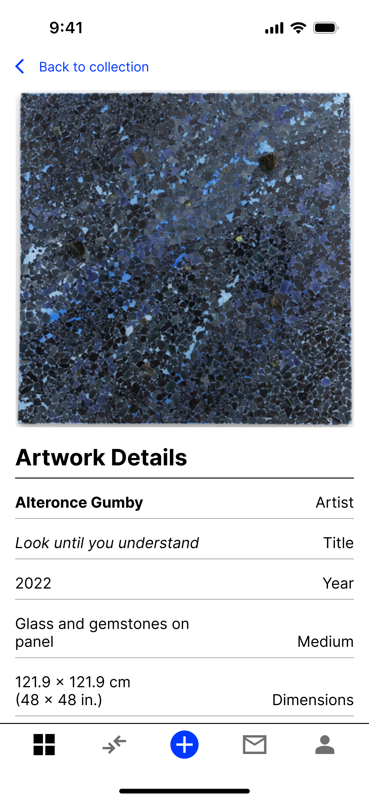
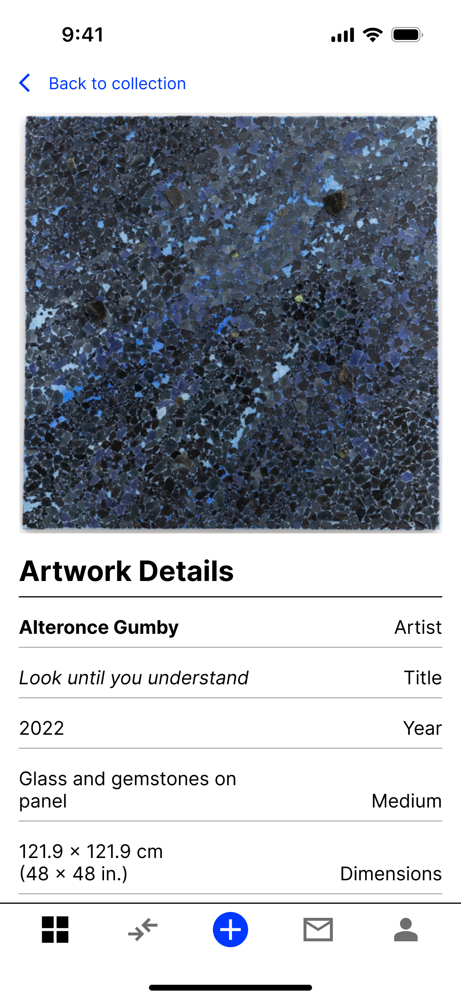

Background
Fairchain was a web3 startup that provides blockchain-enforced contracts that allows artists to receive
a percentage of any future sale of their artwork.
Fairchain was a pre-seed startup looking to quickly build new features to show to more investors.
However, the company was suffering from tech debt due to building more features at such a rapid pace,
especially in the design space.
The company needed a designer to create a cohesive structure and system while delivering designs to
engineering for new features.
My Role
Joining Fairchain as their first UX designer, I sought to design a more cohesive digital experience
while quickly iterating and building new features for users.
During my 3-month contract at Fairchain, I designed several new app features, such as push notifications
and Stripe integration. Additionally, I built a design system and a marketing website to create a more
cohesive end-to-end experience for all target audiences, from first impression to contract signing.
The version being showcased here was from September 2022.
Complete parity between mobile and web
Facing cohesion issues between mobile and web, I built an impromptu design system that helped solve
design disparities between the two platforms, allowing users to fully experience Fairchain equally on
both platforms.
An elegant place for users to store and admire their art
When tackling how to design users' art collections, I streamlined navigational menus and icons to show
art in a minimalist aesthetic that retained a visual style that you'd see most similarly in art
musuems.

 
